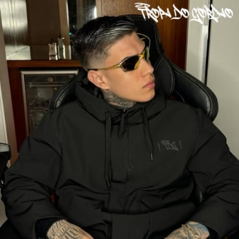
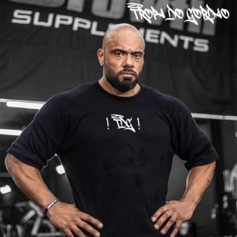

O que você encontrará em nossa loja? Basicamente, você encontrará as melhores vestimentas já usadas pelo Gordão em todo território nacional,
aqui em nosso site, você encontrará desde camisetas, calças, os adoráveis bonés, e claro,
não podemos esquecer das preferidas do Gordão, os óculos
Bem vindo à Loja Tropa do Gordão
Nossos Influenciadores!

Yuri Brida (Yuri22)
Yuri Brida, conhecido como Yuri22, ou também como Gotao, é natural da cidade de Itapira, no Interior de São Paulo, Yuri começou sua carreira como influenciador na LOS GRANDES, de El Gato, posteriormente teve sua saída da equipe e começou a fazer lives na Twitch e no YouTube, o qual permanece até os dias de hoje.
Reserve a Bermuda do Gotao aqui!Eduardo Procopio (WIZARD GODD)
Eduardo de Freitas Procópio, também conhecido como WIZARD GODD, começou sua jornada no mundo dos games no jogo Counter Strike, o famoso CS, que foi desenvolvido pela Valve, desde então, ainda está presente no cenário de games, desta vez no Counter Strike 2.
Reserve a Juliet do Bruxo aqui!

Julio Balestrin
Júlio Balestrin, que é um dos fisioculturistas de maior relevância na internet brasileira, agora faz parte do ecossistema da Tropa do Gordão, mostrando a qualidade presente em nossas roupas.
Reserve a Camisa do Balestrin aqui!